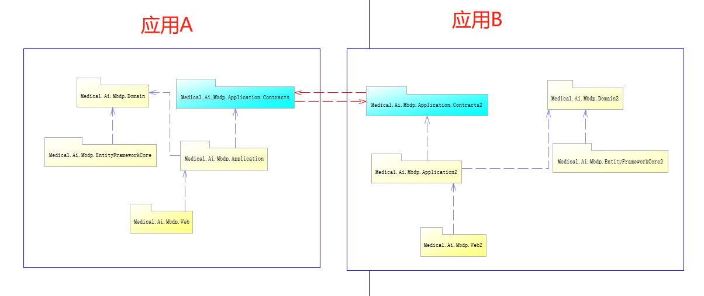
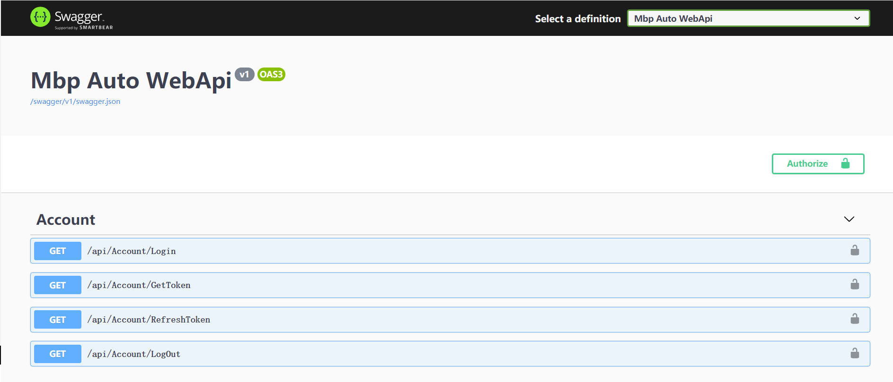

上一篇文章https://www.cnblogs.com/mbpframework/p/12073102.html,介绍了一下Mbp的框架.其实这个框架写出来主要是为了学习,当然也可以经过优化运用到实际的项目中.今天我们来说说怎么使用这个框架.
首先我们用分层的方式来规划下我们的项目代码结构.
Medical.Ai.Mbdp.Application(应用服务层)
这层,通过poco controller,将应用服务方法提供为动态web api.并提供身份验证,权限鉴定,事务功能.在这层使用ef core来进行数据库操作.如果需要使用领域驱动的方式也是可以,在domain定义实体就好了.依赖注入然后通过依赖注入,获取实体对象.前提是需要对领域驱动方式熟悉,确保实施的合理性.
Medical.Ai.Mbdp.Application.Contracts(应用服务契约层)
这个层的设计是借鉴abp的分层架构里面的,在我的设计里面,这个层主要用来定义DTO及对外公布的接口.这个层在单体结构下会显得有些多余,但是在分布式应用中,特别是微服务的架构中作用会很明显.
在分布式或者微服务架构中,各个微服务之间的业务来往大部分时候是通过这个层来做的.
Medical.Ai.Mbdp.Domain(实体层/领域层)
这个层用来定义实体的.当我们不实施DDD时候,可以把这个当作poco entity 层来看代就好了.如果要实施DDD,那么就需要费点劲喔,毕竟很多时候我们的业务都不是一直那么复杂.
Medical.Ai.Mbdp.EntityFrameworkCore(EF CORE基础设施)
这个层是数据访问的基础设施层,因为换ORM的场景毕竟是不多的,如果考虑到性能问题,在早期的时候就应该分离那些场景.所以这个层就没考虑做仓储层了.
Medical.Ai.Mbdp.Web(web api启动项目)
这个层就是用来启动我们的程序的,在net core里面,我们的web程序也是一个独立运行的程序了,不需要一定要放在IIS上了.
熟悉ABP的小伙伴,一定熟悉这种分层方式,而我也是借鉴了别人的分层方式.
好了,简单介绍了一下分层设计的想法之后.我还是上一张图来诠释下.

好了,前面写得文字够多了.接下来就说说怎么启动应用.(确保你的电脑安装了vs2019,sqlserver 2012以上.并且装了.net core3.1的SDK)
1.下载代码,使用git下载代码,gti clone https://github.com/mbpframework/Mbp.git
2.点击生成,生成成功后,开始下一步
3.删除Medical.Ai.Mbdp.EntityFrameworkCore项目下Migrations里的代码文件,全部删掉.
4.设置Medical.Ai.Mbdp.Web项目为启动项
5.打开程序包管理控制台,选中项目Medical.Ai.Mbdp.EntityFrameworkCore,然后输入命令行Add-Migration InitDB
然后再输入update-database.
6.F5运行,出现界面

到此,就OK.为了方便大家交流,我建一个QQ群.